Dirichlet exterior radiation problem
This tutorial introduces how to use the toolbox NIHU to solve a simple exterior acoustic radiation problem.
The problem is radiation by an L-shaped object to the infinite exterior space. The boundary conditions are defined as prescribed pressure on the surface elements. The pressure values are obtained as the pressure field of an acoustic monopole located inside the radiator. This approach makes it possible to compare the computed surface pressure derivatives and external pressure field to analytical solutions.
Contents
Surface mesh generation
Generate an L-shaped domain surface mesh. The mesh is generated by constructing a brick volume, subtracting a subbrick from one of its edges, and finally extracting the boundary surface of the remaining L-shaped volume mesh.
mesh = create_brick(1, 20); expression = sprintf('y > .5 | z < .5'); [nodind, elind] = mesh_select(mesh, expression, 'ind'); mesh.Nodes = mesh.Nodes(nodind,:); mesh.Elements = mesh.Elements(elind,:); mesh = get_boundary(mesh); mesh = drop_unused_nodes(mesh);
Check that the mesh is directed outward by plotting the normals with the toolbox function plot_elem_normals
figure; plot_mesh(mesh); plot_elem_normals(mesh); view(3);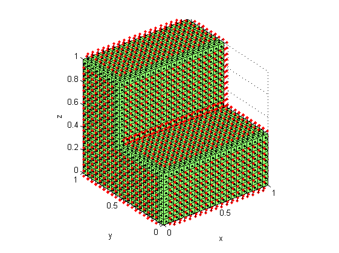
The maximal applicable frequency is determined by the rule of thumb
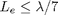
The maximal applicable wave number at each element of the mesh is computed by the toolbox function bemkmax.
ratio = 7;
kmax_elem = bemkmax(mesh, ratio);
figure;
plot_mesh(mesh, kmax_elem); view(3);
c = colorbar; ylabel(c, 'k_{max} [1/m]');
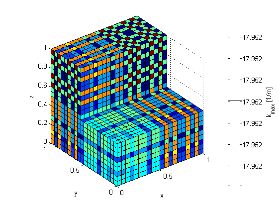 The minimum of these values is the overall frequency limit of computations with this mesh. In the present example, the wave number is set slightly lower than the maximal applicable wave number.
kmax = min(kmax_elem); k = .9*kmax;
Boundary conditions
The radiator is modeled as a transparent surface. The model is excited by the pressure wave field 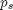 induced by a point source located inside the domain. Constant boundary elements are used with one unknown in each element center. The incident wave field is computed by the toolbox function incident. For further comparison purposes, the incident normal derivative field 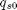 is also computed.
r0 = [.3 .7 .2]; % location of the point source [r, n] = centnorm(mesh); % model elem centers and normals [ps, qs0] = incident('point', r0, r, n, k); figure; plot_mesh(mesh, real(ps)); view(3); c = colorbar; ylabel(c, 'Real pressure');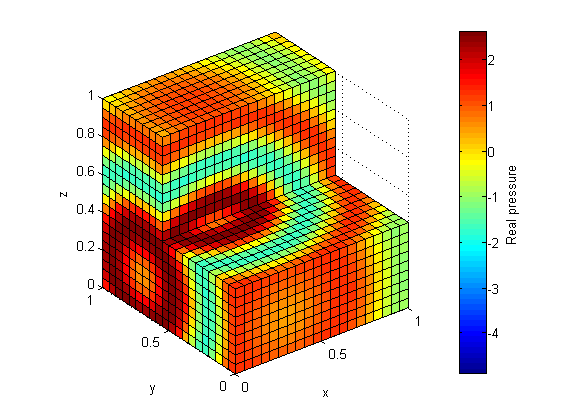
Generate BEM matrices and solve system
The BEM system matrices are generated by the toolbox function bemHG. The system of equations
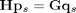
is solved by direct matrix inversion.
[H, G] = bemHG(mesh, k, 'const'); % Generate BEM matrices qs = G \ (H * ps); % solve the system
The surface pressure is compared to the analytical solution of the problem.
e = norm(qs-qs0)/norm(qs0); % compute relative error figure; plot_mesh(mesh, real(qs)); view(3); c = colorbar; ylabel(c, 'Real surface pressure derivative'); title(sprintf('Error: %e', e));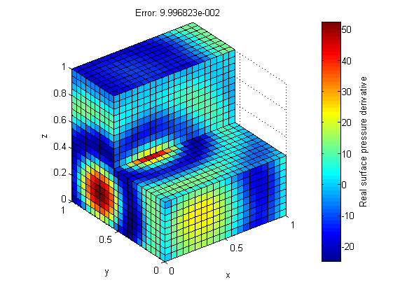
Generate field point mesh
The field point mesh is generated by the toolbox function create_slab.
L = [1 1]; Le = 2*pi/k/ratio; field = create_slab(L, ceil(L/Le)); field = rotate_mesh(field, [0 0 0], [0 -1 0], pi/2); field = translate_mesh(field, [.5 -.5 .5]); figure; plot_mesh(mesh); plot_mesh(field); view(3);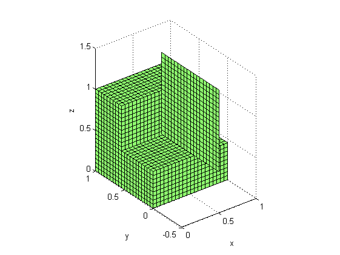
Compute field point pressure
The points of the field point mesh are extracted from the structure field, and are used to generate the field point BEM matrices with the toolbox function bemHG. The field point pressure is computed as
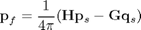
points = field.Nodes(:,2:4);
[H, G] = bemHG(mesh, k, 'const', points);
pf = (H * ps - G * qs) / (4*pi);
The field point pressure is compared to the analytical solution.
pf0 = incident('point', r0, points, [], k); e = norm(pf-pf0)/norm(pf0); figure; plot_mesh(mesh, real(ps)); plot_mesh(field, real(pf)); c = colorbar; ylabel(c, 'Real pressure'); title(sprintf('Error: %e', e)); view(3);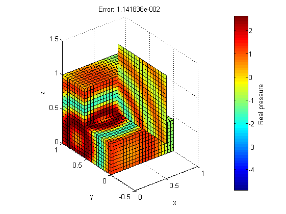